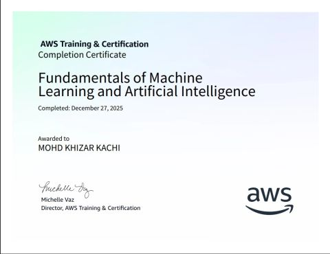
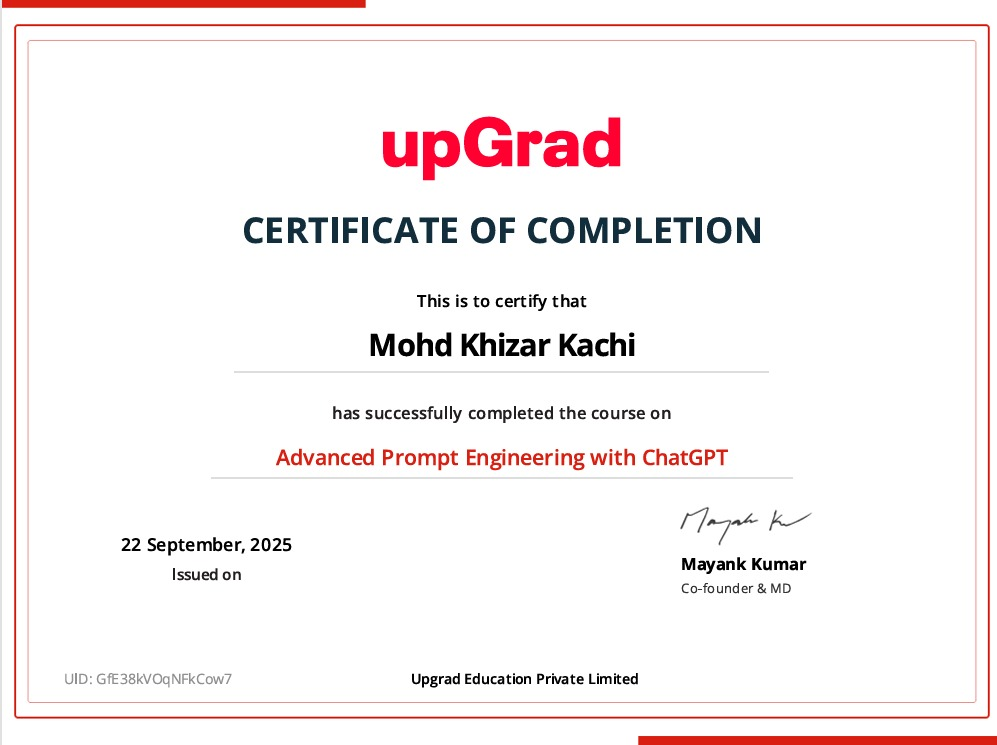
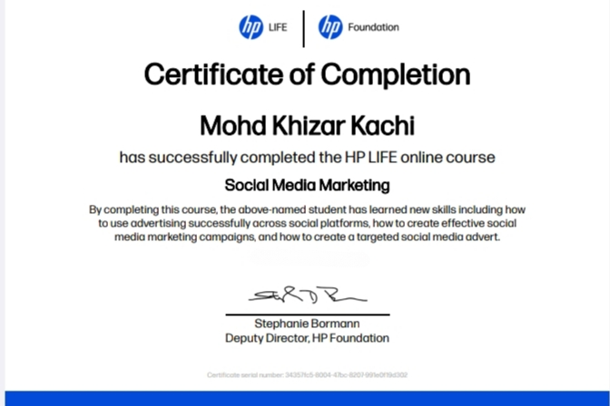
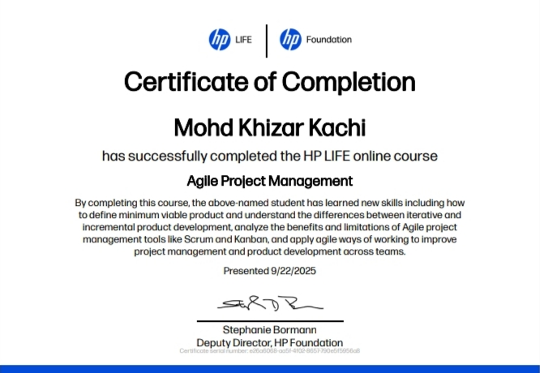
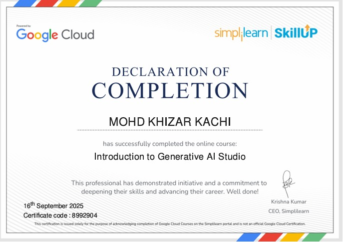
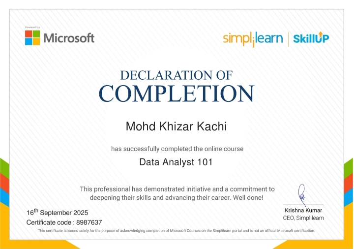
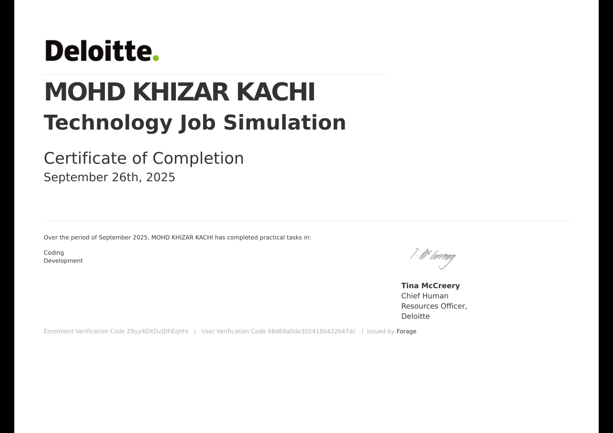
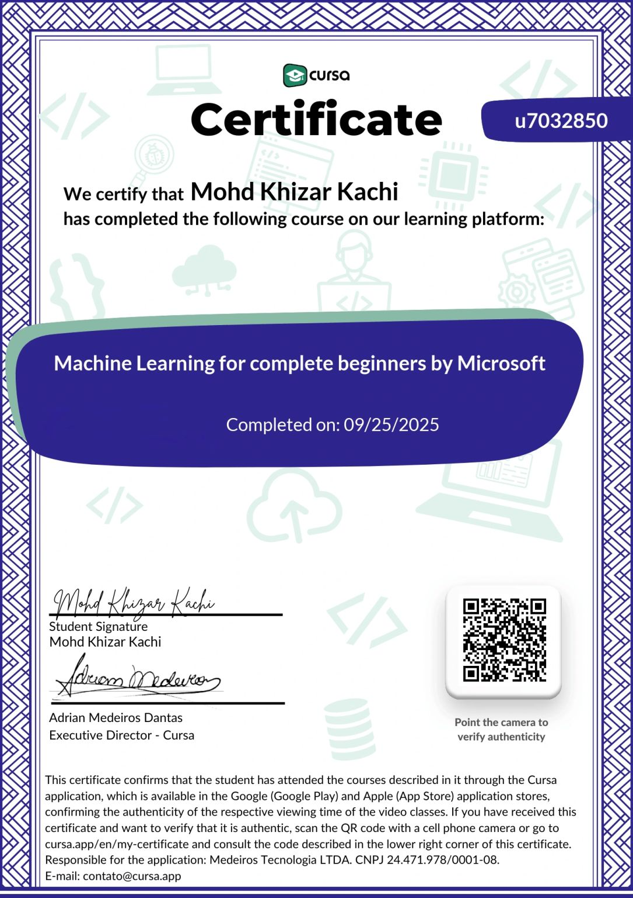

Programming & Data
Writing code, processing data and building analytical workflows.
PythonCSQLPandasNumPyMySQL
I work with Robotics
I'm Mohd Khizar Kachi, a Robotics and Artificial Intelligence engineering student interested in machine learning, computer vision, robotics and industrial automation.
I study Robotics and Artificial Intelligence at Jawaharlal Nehru Engineering College, MGM University. My work spans software-driven intelligence and practical engineering systems—from machine-learning applications to mechanisms designed for real industrial environments.
I enjoy learning by building, testing ideas, and documenting engineering decisions. I am looking for opportunities where I can contribute, learn from experienced teams and turn technical concepts into dependable solutions.
Download my resume ↗Certificate count reflects currently included files; more can be added as they are supplied.
Writing code, processing data and building analytical workflows.
Exploring predictive models and AI-assisted problem solving.
Connecting mechanical systems, sensors and control concepts.
Breaking down problems and communicating technical work.
Skills are based on the supplied resume and project materials. Add or remove technologies to reflect your current hands-on proficiency.
A mix of AI applications, automation concepts and mechanical engineering. Project status is stated transparently.
An agriculture-focused ML application combining crop-yield prediction and plant-disease detection to support data-informed farming decisions.
A voice-command-controlled cleaning system with dirt-level detection and sensor-feedback-based operation logic.
A Python-based voice assistant designed to respond to spoken commands and automate small everyday tasks.
Team project for Shree Tubes Pvt. Ltd., focused on a belt-drive and release mechanism for heavy steel tube bundles. The supplied report describes a dual-shaft belt system, induction motor, gearbox, VFD control and safety interlocks.
A device concept for indicating the level of stored material or liquid. Detailed hardware specifications and implementation evidence can be added later.
A proposed industrial pipe-handling lift concept with a hydraulic actuation system and a target rated load defined during project planning.
Selected completion certificates. Open a certificate to inspect the supplied document or image. No verification URLs are fabricated.

VIEW ↗AWS Training & Certification

VIEW ↗upGrad · 22 September 2025

VIEW ↗HP LIFE · HP Foundation

VIEW ↗HP LIFE · HP Foundation

VIEW ↗Simplilearn SkillUp · Google Cloud course

VIEW ↗Simplilearn SkillUp · Microsoft course

VIEW ↗Deloitte · Forage · 26 September 2025

VIEW ↗Microsoft course · Cursa · 25 September 2025
Tata · Forage · 17 July 2026
This gallery will grow as additional certificate files and verification links are provided.
Robotics & Artificial Intelligence
Jawaharlal Nehru Engineering College (JNEC), MGM University
Chhatrapati Sambhajinagar, Maharashtra, India
HSC
Maulana Azad Junior College of Arts, Science & Commerce
SSC
M. P. Sarosh English High School
Official cumulative CGPA not yet entered. Detailed marksheets are intentionally not published.
Open to internship opportunities, entry-level roles, engineering collaboration and conversations about AI or automation projects.
Chhatrapati Sambhajinagar, Maharashtra, India
English · Hindi · Urdu · Marathi